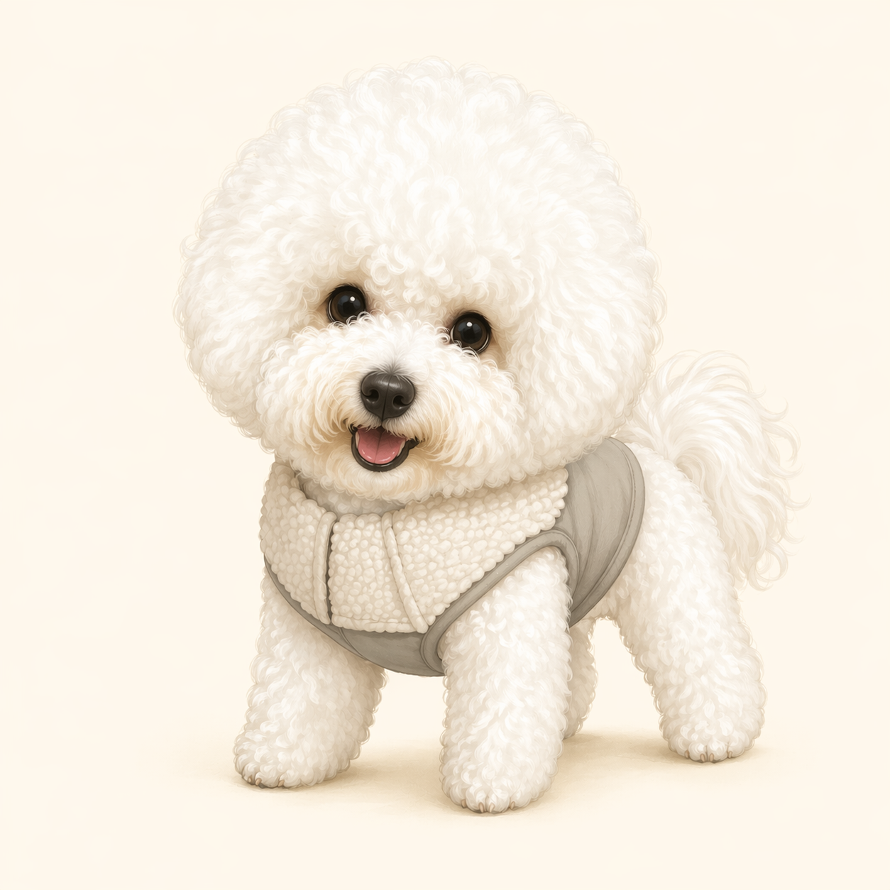

비숑 계열의 작은 흰색 반려견들은 지중해 무역로를 따라 사람들과 함께 이동하며 사랑받았습니다.
About the breed
비숑 프리제는 밝고 다정한 반려견입니다.
둥근 얼굴과 구름 같은 털, 사람을 좋아하는 성격으로 사랑받는 소형견입니다. 이름의 느낌처럼 우아하지만, 일상에서는 장난기와 애교가 많은 친구예요.

History
비숑 프리제의 역사
밝은 성격과 화려한 외모 덕분에 유럽의 귀족 사회와 궁정에서 반려견으로 인기가 높았습니다.
오늘날에는 영리하고 사교적인 성격, 실내 생활에 잘 맞는 크기 덕분에 대표적인 가족견으로 자리 잡았습니다.
Traits
성격과 특징
사람을 좋아해요
가족 곁에 있는 것을 좋아하고 낯선 사람에게도 비교적 밝게 다가가는 편입니다.
장난기가 많아요
놀이 반응이 좋고 표정이 풍부해서 집 안 분위기를 즐겁게 만들어 줍니다.
훈련을 잘 배워요
칭찬과 간식 보상을 활용하면 기본 예절과 간단한 트릭을 즐겁게 익힐 수 있습니다.
털 관리가 중요해요
풍성한 곱슬 털은 엉킴이 생기기 쉬워 정기적인 빗질과 미용이 필요합니다.
Care Guide
함께 살 때 기억할 점
짧고 꾸준한 산책, 공놀이, 노즈워크처럼 에너지를 건강하게 쓰는 활동이 좋습니다.
털이 폭신하게 유지되도록 주기적으로 빗질하고, 미용 주기를 놓치지 않는 것이 좋습니다.
사람을 좋아하는 만큼 혼자 있는 연습을 천천히 해주면 안정적인 생활에 도움이 됩니다.